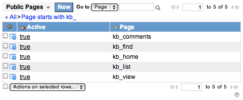

Legacy:Setting Up Knowledge Management
| |
Note: This article applies to Fuji and earlier releases. For more current information, see Knowledge Management at http://docs.servicenow.com
The ServiceNow Wiki is no longer being updated. Visit http://docs.servicenow.com for the latest product documentation. |
Contents
1 Overview
By default, ServiceNow knowledge management lets you create new articles manually or from existing incidents or problems. Administrators can extend and enhance the knowledge management functionality by setting up:
- Knowledge properties and search capabilities
- Accessibility (private vs. public)
- Portal and article page layout
2 Knowledge Properties and Search
Access knowledge properties from either of these locations
- Knowledge Base > Properties
- System Properties > Knowledge Management
These pages, which both display the same options, divide the available properties into groups that let you configure the:
In addition to the property settings, administrators can configure a variety of other knowledge search features. For example, you can enable searching from additional forms and fields, add meta tags to enhance searching, and enable search suggestions. For more information, see Administering Knowledge Search.
3 Knowledge Accessibility
The ServiceNow knowledge base can be public or private. The knowledge base is private by default.
A public knowledge base is accessible to everyone, no login required. When a user enters the URL <instance name>.service-now.com/kb_home.do, the knowledge portal appears. This approach provides easy access to published knowledge articles. Administrators can protect sensitive content by applying role-based access to those articles.
A private knowledge base requires users to log in before they can access any articles. When a user enters the URL <instance name>.service-now.com/kb_home.do, the login page appears. After logging in, users see the knowledge portal. This approach provides secure access to all knowledge articles. Administrators can further protect sensitive content by applying role-based access to those articles.
Administrators can make a public knowledge base private or make a private knowledge base public, depending on organizational needs.
- If it is not active, activate the System Definition > Public Pages module by editing the System Definition application.
- Navigate to System Definition > Public Pages.
- Filter the list to view pages that start with kb_.
- Open each page whose accessibility is to be changed and select the Active check box to make the page public. Clear the Active check box to make the page private.
- For a public knowledge base, both the kb_home and kb_list pages must be active. Login is required to view articles for any pages that are not active.
These public pages affect the accessibility of the knowledge portal.
| Page Name | Description |
|---|---|
| kb_comments | Enables public users to see comments from other users, if active. |
| kb_find | Enables public users to search the knowledge base, if active. |
| kb_home | Displays the knowledge portal page, if both this page and kb_list are active. |
| kb_list | Displays the list of articles on the knowledge portal page, if both this page and kb_home are active. |
| kb_view | Enables public users to view knowledge articles, if active. |
- Public knowledge base pages
{kind=link}
4 Knowledge Portal
The knowledge portal page displays a list of recent articles organized by topic. Administrators control what topics are available and the layout of topics on the portal page, as well as whether unpublished articles are visible.
4.1 Adding or Removing Knowledge Topics
When removing a topic, be sure to update the associated articles to use a new topic. Otherwise, those articles do not appear on the knowledge portal, though they can be found with knowledge search.
To add or remove topics from the knowledge base:
- Navigate to Knowledge Base > Edit.
- Open any knowledge record.
- Right-click the Topic field label, and select Personalize Choices.
- Use the form to create new topic names, add or remove topics, and change their order in the list (Move up and Move down arrows).
- The order of topics in this list affects the layout on the knowledge portal. See Arranging Topics.
- Click Save.
- If needed, update the Topic setting for the knowledge record and click Update.
{kind=link}
4.2 Arranging Topics
Use the Knowledge Management Properties page to configure whether empty topics appear on the knowledge portal.
By default, topics display from left to right on the knowledge portal in the same sequence that they appear on the Knowledge form's Topic choice list.
Any user can temporarily change the order of topics on their view of the knowledge portal:
- Click and hold on the topic header bar.
- Drag the topic box to the desired location.
Administrators can permanently change the portal's standard topic arrangement by reordering the choices in the Topic field. See Adding or Removing Knowledge Topics.
4.3 Showing Unpublished Articles
You can configure the knowledge portal and search results to provide role-based access to articles in the draft or review state.
- Navigate to Knowledge Base > Properties.
- Use Show unpublished articles in Knowledge Base portal and topic lists to indicate whether unpublished articles are ever shown in the knowledge portal and search results.
- Use List of roles (comma separated) that can see articles in the Review workflow state in the Knowledge portal and Topic list to designate which roles can see articles in the review state.
- If the list of roles is blank or the public role is included, all users can see articles in the review state.
- Use List of roles (comma separated) that can see articles in the Draft workflow state in the Knowledge portal and Topic list to designate which roles can see articles in the draft state.
- If the list of roles is blank or the public role is included, all users can see articles in the draft state.
- Click Save.
Icons denote the state of the articles:
{kind=link}
{kind=link}
{kind=link}
In the knowledge portal, state icons appear beside the article's date.
{kind=link}
In search results, state icons appear beside the article path.
{kind=link}
5 Article View
Administrators can control the presence and appearance of various elements on knowledge article pages.
- The Show "Link" URL in Knowledge articles property lets you control whether the permalink (direct link to the article) appears below an article.
- The kb_article_footer UI macro lets you control the look of the permalink and view count.
- The kb_view UI page lets you control the look and feel of page layout features, article metadata (article number, date published, and date last modified), and feedback options. This UI page also lets you control where and how related information appears on the page: affected products, attachments, and tasks to which the article is attached.
5.1 Adding Custom Content to Article View
If your organization requires specific information to appear with all articles, such as a custom field on the knowledge records, create a UI macro named kb_view_custom. Creating this UI macro requires a knowledge of scripting.
When ServiceNow displays a knowledge article, it searches for the kb_view_custom UI macro. If the UI macro is found, its contents are displayed immediately below the article text.
- Since this custom UI macro is inserted into an existing HTML table, any text to be displayed must be contained in a <tr> tag with one or more <td> tags.
- The variable kb, a GlideRecord that is the current article's kb_knowledge record, is available to this custom UI macro.
For example, the following UI macro script would display the contents of a custom kb_knowledge field immediately below the article text, but only to users with the itil role:
<?xml version="1.0" encoding="utf-8" ?>
<j:jelly trim="false" xmlns:j="jelly:core" xmlns:g="glide" xmlns:j2="null" xmlns:g2="null">
<j:if test="${gs.hasRole('itil')}"> // checks for the itil role
My new field: $[kb.u_my_field.getDisplayValue()] // displays the content of the u_my_field from the current article
</j:if>
</j:jelly>
5.2 Displaying Affected Products and Most Recent Tasks
Knowledge articles can display a list of products or tasks (such as incidents, problems, or changes) associated with the content. When they are used, the Affected products list and the Most recent tasks list appear below any article for which relevant information is available.
{kind=link}
To display a list of associated products:
- Navigate to Knowledge Base > Properties.
- Select the Show affected products when viewing an article property.
- Click Save.
- Navigate to Knowledge Base > Edit and open a record.
- Add the appropriate configuration items to the Affected Products related list.
- If needed, add the related list.
- Click Save.
To display a list of associated tasks:
- Navigate to Knowledge Base > Properties.
- Under Show tasks to which an article has been recently attached, select the Yes check box.
- Use the property Number of attached tasks to display when viewing an article to set a maximum number of attached tasks to list in article view.
- Click Save.
- Article view lists the task from which the article was created, if any (see Creating Knowledge), and any tasks to which the article has been attached.
5.3 Configuring Feedback Options
Article view displays one or more feedback options below the article. These options permit users to give specific kinds of feedback. Administrators can enable or disable feedback options or apply role-based restrictions.
5.3.1 Was This Helpful?
The question Was This Helpful? requests a simple Yes or No answer. If the user responds to this question, a Feedback field opens for comments and a Create Incident link may appear. Control these options in Knowledge Base > Properties.
- Show the "Was this article helpful?" yes/no rating option: controls whether this option appears in article view.
- List of roles (comma separated) that can see yes/no "Was this article helpful?" rating option: sets the roles permitted to see this feedback option.
- Show "Create Incident" link after a Knowledge article is rated not helpful: indicates whether users can create an incident from an article rated as not helpful.
- URL used for the "Create Incident" link after rating a Knowledge article not helpful: specifies the URL for creating an incident. The default setting is:
- incident.do?sys_id=-1&sysparm_query=active=true^comments=(Created after Knowledge search: [HTML:sysparm_search])&sysparm_stack=kb_home.do
5.3.2 Five-Star Rating System
The five-star rating system lets users indicate the article's effectiveness on a scale of 1 to 5. As the cursor moves over the stars, the heading previews the rating until the user clicks. Control these options in Knowledge Base > Properties.
- Show five-star rating option: controls whether this option appears in article view.
- List of roles (comma separated) that can see five-star rating option: sets the roles permitted to see this feedback option.
5.3.3 Flag Article
When a user selects the Flag article check box, the Feedback field becomes mandatory. Control these options in Knowledge Base > Properties.
- Show "Flag Article" option to identify incomplete/inaccurate articles: controls whether this option appears in article view.
- List of roles (comma separated) that can flag incomplete/inaccurate articles: sets the roles permitted to see this feedback option.
{kind=link}